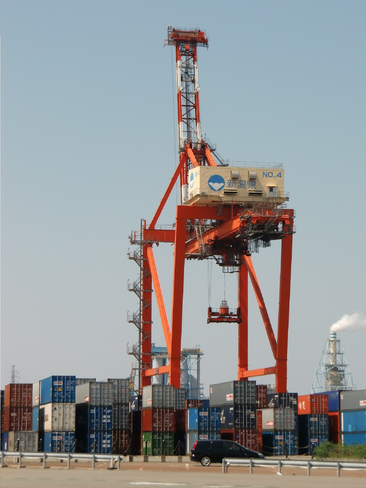

Central Asia's trade with the Gulf has nearly quadrupled in five years; Uzbekistan leads
According to a Eurasian Development Bank report, trade turnover reached $3.9 billion in 2025. Uzbekistan accounts for 45 percent of the region's trade with the Gulf.

According to an analytical brief published by the Eurasian Development Bank (EDB), trade between Central Asian states and the Gulf countries has grown rapidly over the past five years. According to Eurasianet, trade turnover almost quadrupled between 2020 and 2025.
$3.9 billion
Overall trade turnover rose from $1 billion in 2020 to $3.9 billion in 2025. At the same time, the figure barely changed the region's share of global trade: in 2025 it accounted for just 1.7 percent (up one percentage point from 2020). According to the EDB, the balance of trade tilts heavily in favour of the Gulf states.
Investment tripled
Total Gulf investment across Central Asia topped $31.1 billion by the end of the first half of 2026 — three times more than five years earlier. The fastest-growing sector is power generation, which accounts for just over one-third of the Gulf's overall investment.

By country
Uzbekistan and Turkmenistan are the leading traders with the Gulf. Uzbekistan's share in 2025 was 45 percent, or $860 million; the majority of exports consisted of gold, minerals and agricultural products, while imports reached $890 million, a slight trade deficit. Turkmenistan's turnover was $1.6 billion, Kazakhstan's $300 million, Kyrgyzstan's $185 million and Tajikistan's $107 million.
Growth may slow
The bank projects that trade growth will slow over the next five years, constrained by high transportation costs. The brief states: 'The absence of direct access to seaports in Central Asia, coupled with the necessity to utilize complex multimodal shipping routes, results in increased transportation costs and extended transit times.' It also cited underdeveloped logistics infrastructure and limited access to trade finance as barriers.